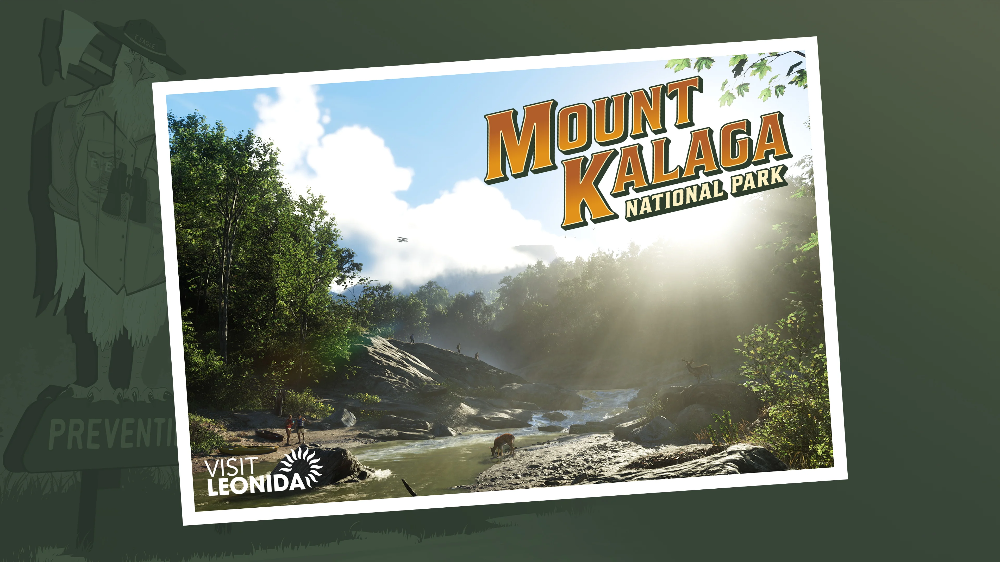
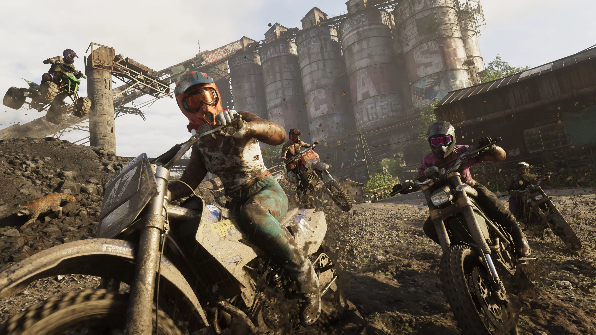
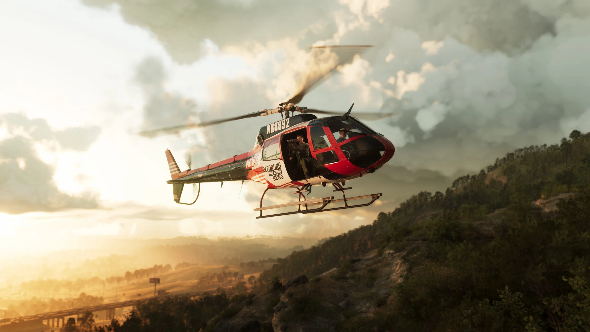
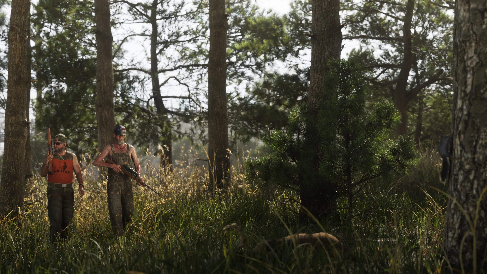
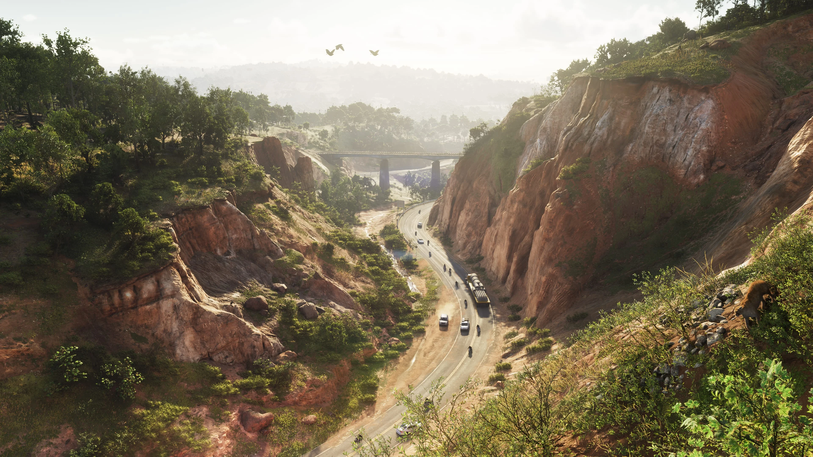
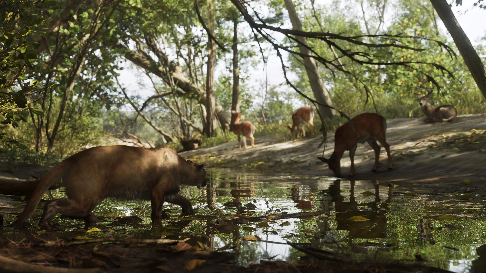
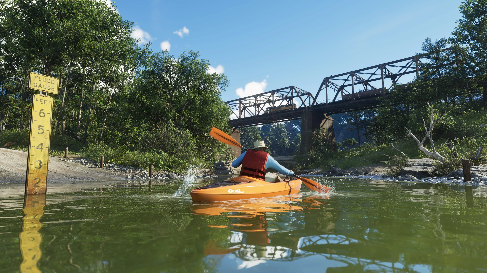

Mount Kalaga National Park
Mount Kalaga National Park é um dos destinos oficialmente apresentados pela Rockstar Games para Grand Theft Auto VI. Os materiais oficiais mostram uma área natural bem diferente dos ambientes urbanos, costeiros e alagados já vistos em outras partes de Leonida.

A natureza de Leonida
Mount Kalaga National Park aparece entre os destinos apresentados oficialmente pela Rockstar Games no estado de Leonida.
Os seis screenshots identificados com o nome da região mostram vegetação, relevo, áreas junto à água e cenários naturais bem diferentes de Vice City, Leonida Keys e Grassrivers.
A Rockstar ainda não detalhou publicamente os nomes dos pontos internos do parque nem como cada área poderá ser explorada durante o jogo.

CONFIRMADO: Mount Kalaga National Park é um dos destinos oficialmente apresentados de Leonida e possui seis screenshots identificados na biblioteca oficial de GTA VI.

Diferentes formas de atravessar a região
Os materiais publicados pela Rockstar mostram veículos em diferentes partes de Mount Kalaga, incluindo uma motocicleta em terreno irregular e um helicóptero em uma das imagens oficiais.
A presença desses veículos nas imagens não confirma, por si só, atividades ou missões específicas relacionadas a eles.
O GTA6Zoone só associará mecânicas, missões ou atividades ao parque quando houver informação oficial ou verificação direta no jogo.
Entre árvores e áreas naturais
Outro screenshot oficial mostra pessoas em uma área densamente arborizada de Mount Kalaga National Park.
A imagem reforça o contraste entre o parque e os grandes centros urbanos apresentados para GTA VI.
Ainda não há informação oficial suficiente para identificar o nome desse ponto, a situação retratada ou sua função dentro do jogo.


Um cenário de grandes elevações
A série de screenshots de Mount Kalaga também apresenta áreas de relevo acentuado e grandes formações naturais.
Essas imagens ajudam a mostrar a diversidade geográfica apresentada pela Rockstar para Leonida.
O GTA6Zoone não atribuirá nomes ou posições geográficas específicas a essas áreas enquanto não houver confirmação suficiente.
Água e vegetação dentro do parque
Outro material oficial mostra uma área cercada por vegetação e água dentro do conjunto de imagens atribuído a Mount Kalaga National Park.
A Rockstar ainda não informou publicamente o nome desse local nem quais atividades poderão acontecer ali.
Caso existam pontos de interesse, colecionáveis, atividades, animais ou segredos nessa área, eles só serão adicionados quando puderem ser confirmados ou verificados.


Mais uma face de Mount Kalaga
O sexto screenshot oficial da região mostra outro ambiente junto à água, com estruturas e elementos construídos no cenário.
Embora esses elementos possam ser observados na imagem, a Rockstar ainda não publicou informações suficientes para definir oficialmente o nome ou a função desse local.
Esses detalhes poderão ser catalogados quando houver informação verificável.
O que a Rockstar já publicou
Mount Kalaga possui material próprio dentro da biblioteca oficial de Grand Theft Auto VI.
Destino oficial
Mount Kalaga aparece entre os destinos oficialmente apresentados de Leonida.
Seis screenshots
A biblioteca oficial lista Mount Kalaga National Park 01 até 06.
Postcard oficial
Mount Kalaga National Park também possui postcard na área oficial de artwork e wallpapers.
Tudo sobre o parque
Esta página poderá ser ampliada conforme surgirem novas informações oficiais e, depois do lançamento, dados que possam ser verificados diretamente no jogo.
Locais
Áreas e pontos de interesse que puderem ser confirmados.
Missões
Missões ligadas à região, caso possam ser verificadas.
Atividades
Atividades do parque que forem confirmadas no jogo.
Veículos
Veículos associados à região que puderem ser verificados.
Vida selvagem
Animais da região, caso sejam confirmados.
Colecionáveis
Colecionáveis, caso existam e possam ser verificados.
Segredos
Locais escondidos e descobertas que puderem ser verificadas.
Easter Eggs
Referências e curiosidades verificadas dentro do jogo.
Imagens de Mount Kalaga
Os seis screenshots oficiais identificados pela Rockstar Games como Mount Kalaga National Park.
Mount Kalaga no mapa de GTA VI
Mount Kalaga National Park faz parte dos destinos oficialmente apresentados de Leonida.
Como ainda não há um mapa oficial completo que permita estabelecer todos os limites e pontos internos do parque, o GTA6Zoone não tratará coordenadas estimadas como informações oficiais.
Explorar o mapa →O que está confirmado
A região foi apresentada oficialmente pela Rockstar Games.
Mount Kalaga aparece entre os destinos apresentados no estado de Leonida.
A biblioteca oficial lista Mount Kalaga National Park 01 até 06.
A Rockstar também disponibilizou um postcard dedicado à região.
Rockstar Games
Esta página utiliza somente informações e materiais publicados oficialmente pela Rockstar Games.
Site oficial de Grand Theft Auto VI
TRANSPARÊNCIA EDITORIAL: a Rockstar ainda não detalhou publicamente muitos aspectos de Mount Kalaga National Park. O GTA6Zoone não atribui missões, atividades, fauna, propriedades, nomes de pontos específicos ou histórias às imagens sem confirmação oficial ou verificação direta no jogo.